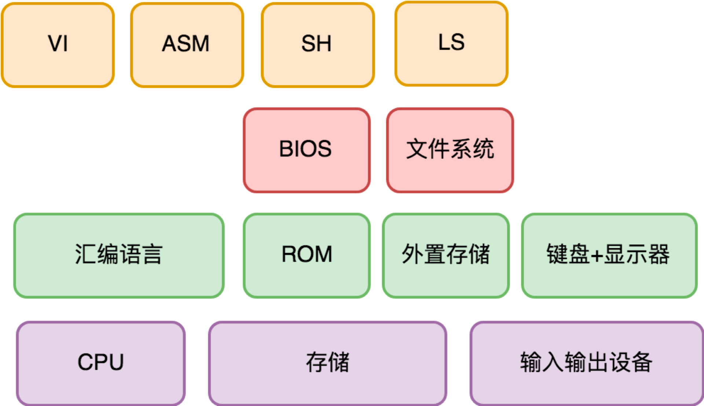

- 00 开篇词 怎样成长为优秀的软件架构师？.md.html
- 01 架构设计的宏观视角.md.html
- 02 大厦基石：无生有，有生万物.md.html
- 03 汇编：编程语言的诞生.md.html
- 04 编程语言的进化.md.html
- 05 思考题解读：如何实现可自我迭代的计算机？.md.html
- 06 操作系统进场.md.html
- 07 软件运行机制及内存管理.md.html
- 08 操作系统内核与编程接口.md.html
- 09 外存管理与文件系统.md.html
- 10 输入和输出设备：交互的演进.md.html
- 11 多任务：进程、线程与协程.md.html
- 12 进程内协同：同步、互斥与通讯.md.html
- 13 进程间的同步互斥、资源共享与通讯.md.html
- 14 IP 网络：连接世界的桥梁.md.html
- 15 可编程的互联网世界.md.html
- 16 安全管理：数字世界的守护.md.html
- 17 架构：需求分析 (上).md.html
- 18 架构：需求分析 (下) · 实战案例.md.html
- 19 基础平台篇：回顾与总结.md.html
- 20 桌面开发的宏观视角.md.html
- 21 图形界面程序的框架.md.html
- 22 桌面程序的架构建议.md.html
- 23 Web开发：浏览器、小程序与PWA.md.html
- 24 跨平台与 Web 开发的建议.md.html
- 25 桌面开发的未来.md.html
- 26 实战（一）：怎么设计一个“画图”程序？.md.html
- 27 实战（二）：怎么设计一个“画图”程序？.md.html
- 28 实战（三）：怎么设计一个“画图”程序？.md.html
- 29 实战（四）：怎么设计一个“画图”程序？.md.html
- 30 实战（五）：怎么设计一个“画图”程序？.md.html
- 31 辅助界面元素的架构设计.md.html
- 32 架构：系统的概要设计.md.html
- 33 桌面开发篇：回顾与总结.md.html
- 34 服务端开发的宏观视角.md.html
- 35 流量调度与负载均衡.md.html
- 36 业务状态与存储中间件.md.html
- 37 键值存储与数据库.md.html
- 38 文件系统与对象存储.md.html
- 39 存储与缓存.md.html
- 40 服务端的业务架构建议.md.html
- 41 实战（一）：“画图”程序后端实战.md.html
- 42 实战（二）：“画图”程序后端实战.md.html
- 43 实战（三）：“画图”程序后端实战.md.html
- 44 实战（四）：“画图”程序后端实战.md.html
- 45 架构：怎么做详细设计？.md.html
- 46 服务端开发篇：回顾与总结.md.html
- 47 服务治理的宏观视角.md.html
- 48 事务与工程：什么是工程师思维？.md.html
- 49 发布、升级与版本管理.md.html
- 50 日志、监控与报警.md.html
- 51 故障域与故障预案.md.html
- 52 故障排查与根因分析.md.html
- 53 过载保护与容量规划.md.html
- 54 业务的可支持性与持续运营.md.html
- 55 云计算、容器革命与服务端的未来.md.html
- 56 服务治理篇：回顾与总结.md.html
- 57 心性：架构师的修炼之道.md.html
- 58 如何判断架构设计的优劣？.md.html
- 59 少谈点框架，多谈点业务.md.html
- 60 架构分解：边界，不断重新审视边界.md.html
- 61 全局性功能的架构设计.md.html
- 62 重新认识开闭原则 (OCP).md.html
- 63 接口设计的准则.md.html
- 64 不断完善的架构范式.md.html
- 65 架构范式：文本处理.md.html
- 66 架构老化与重构.md.html
- 67 架构思维篇：回顾与总结.md.html
- 68 软件工程的宏观视角.md.html
- 69 团队的共识管理.md.html
- 70 怎么写设计文档？.md.html
- 71 如何阅读别人的代码？.md.html
- 72 发布单元与版本管理.md.html
- 73 软件质量管理：单元测试、持续构建与发布.md.html
- 74 开源、云服务与外包管理.md.html
- 75 软件版本迭代的规划.md.html
- 76 软件工程的未来.md.html
- 77 软件工程篇：回顾与总结.md.html
- 加餐 如何做HTTP服务的测试？.md.html
- 加餐 实战：“画图程序” 的整体架构.md.html
- 加餐 怎么保障发布的效率与质量？.md.html
- 热点观察 我看Facebook发币（上）：区块链、比特币与Libra币.md.html
- 热点观察 我看Facebook发币（下）：深入浅出理解 Libra 币.md.html
- 用户故事 站在更高的视角看架构.md.html
- 答疑解惑 想当架构师，我需要成为“全才”吗？.md.html
- 结束语 放下技术人的身段，用极限思维提升架构能力.md.html
- 课外阅读 从《孙子兵法》看底层的自然法则.md.html
- 捐赠
05 思考题解读：如何实现可自我迭代的计算机？
你好，我是七牛云许式伟。
在“03 | 汇编：编程语言的诞生”中，我给出了一个架构思考题：
第一台以键盘+显示器为标准输入输出的现代计算机出现后，一个最小功能集，但计算能力可自我迭代的计算机应该是什么样的？
从需求上来说，我们期望它有如下能力。
- 键盘和显示器的驱动程序。
- 当时最主流的外置存储设备（不一定是现代的硬盘）的驱动程序。
- 一个汇编程序编辑器。可从存储中读取汇编程序代码，修改并保存到存储中。
- 一个汇编编译器。可将汇编程序代码编译成机器代码程序，并保存到存储中。
- 支持执行一段保存在外置存储设备中的机器代码程序。
那么，它的变化点和稳定点分别是什么？为此，你会怎么设计，设计出哪些子系统，每个子系统的规格是什么？扩展性上有哪些考虑？
需求分析
我们前面谈架构思维时提到：做架构，第一件事情要学会做需求分析。
需求分析的重要性怎么形容都不过分。准确的需求分析是做出良好架构设计的基础。我个人认为，架构师在整个架构的过程中，至少应该花费三分之一的精力在需求分析上。
这也是为什么很多非常优秀的架构师换到一个新领域后，一上来并不能保证一定能够设计出良好的架构，而是往往需要经过几次迭代才趋于稳定，原因就在于：领域的需求理解是需要一个过程的，对客户需求的理解不可能一蹴而就。
所以，一个优秀的架构师除了需要“在心里对需求反复推敲”的严谨态度外，对客户反馈的尊重之心也至关重要。只有心里装着客户，才能理解好需求，做好架构。
前面我们也强调过：在需求分析时，要区分需求的变化点和稳定点。稳定点往往是系统的核心能力，而变化点则需要对应地去考虑扩展性上的设计。
那么今天我们来实战一番，要实现一个最小化的计算能力可自我迭代的计算机，我们怎么做需求分析。
怎么实现可自我迭代的计算机？
通过前面对计算机工作原理的分析，我们已经知道，计算机分为三大类的零部件：
- 中央处理器；
- 存储；
- 输入输出设备。
中央处理器作为“计算”能力的核心，我们已经对它的工作范畴解剖清晰，这里不提。
存储，一方面作为“计算”的输入输出，另一方面作为“计算”本身的承载（也就是程序），主要的变数在后者。存储上的程序主要是：
- 计算机主板ROM上的启动程序（BIOS）；
- 外置存储上的软件。
接下来我们要考虑清楚的是：BIOS 负责做什么，外置存储上的软件负责做什么。这里我们先不展开。
输入输出设备，除了键盘和显示器外，还有外置存储。键盘和显示器我们只需要准备好对应的驱动程序，并没有特别需要考虑的内容。主要的变数在外置存储上。
外置存储在我们为它准备好了驱动程序后，就可以对它进行数据的读写了，但是我们接着需要考虑的问题是：我们准备把外置存储的数据格式设计成什么样？
回答这个问题前，先回顾下我们要做什么。目前我们已知的功能需求有如下这些。
- 键盘和显示器的驱动程序。
- 外置存储设备的驱动程序。
- 汇编程序编辑器。可从外置存储中读取汇编程序代码，修改并保存到外置存储中。
- 汇编编译器。可将汇编程序代码编译成机器代码程序，并保存到外置存储中。
- 支持执行一段保存在外置存储设备中的机器代码程序。
我们可以看到，外置存储需要保存的内容有：
汇编程序的源代码；
汇编编译器编译出来的可执行程序。
可见，外置存储它不应该只能保存一个文件，而是应该是多个。既然是多个，就需要组织这些文件。那么，怎么组织呢？
今天我们当然知道，操作系统的设计者们设计了文件系统这样的东西，来组织这些文件。虽然文件系统的种类有很多（比如：FAT32、NTFS、EXT3、EXT4 等等），但是它们有统一的抽象：文件系统是一颗树；节点要么是目录，要么是文件；文件必然是叶节点；根节点是目录，目录可以有子节点。
但是，文件系统（File System）是否是唯一的可能性？当然不是。键值存储（Key-Value 存储）也挺好，尤其是早期外置存储容量很可能极其有限的情况下。可以做这样统一的抽象：
- 每个文件都有一个名字（Key），通过名字（Key）可以唯一定位该文件，以进行文件内容的读写；
- 为了方便管理文件，可以对文件名做模糊查询（List），查询（List）操作支持通配符（比如我们现在习惯用的
*和?）； - 未来外置存储的空间有可能很大，需要考虑文件管理的延展性问题；可以考虑允许每个文件设定额外的元数据（Meta），例如创建时间、编辑时间、最后访问时间、以及其他用户自定义的元数据。通过元数据我们也可以检索（Search）到我们感兴趣的文件。
聊完了外置存储，让我们再回来看看 BIOS 和外置存储的软件怎么分工。
首先，BIOS 和外置存储上的软件分工的标准是什么？BIOS 是刻在计算机主板ROM上的启动程序，它的变更非常麻烦。所以 BIOS 负责的事情最好越少越好，只做最稳定不变的事情。
我们一一来看当前已知的需求。
首先是外部设备的驱动程序：键盘和显示器的驱动程序、外置存储设备的驱动程序。一方面，只要键盘、显示器、外置存储没有大的演进，驱动程序就不变，所以这块是稳定的；另一方面，它们是 BIOS 干其他业务的基础。所以，这个事情 BIOS 必然会做。
其次是汇编程序编辑器。 编辑器的需求是模糊的，虽然我们知道它支持用户来编写程序，但是整个编辑器的操作范式是什么样的，没有规定。所以它不像是给键盘写一个驱动程序那样，是一个确定性的需求，而有很多额外的交互细节，需要去进一步明确。
你可以留意下自己日常使用的编辑器，去试着列一下它们的功能列表。你会发现小小的编辑器，功能远比你接触的大部分常规软件要多得多。
再次是汇编编译器。 汇编编译器从输入输出来看，似乎需求相对确定。输入的是汇编源代码，输出的是可执行程序。但认真分析你会发现，它实际上也有很大的不确定性。
其一，CPU 会增加指令，这时候汇编指令也会相应地增加。对于大部分应用程序，CPU 新增的指令如果自己用不到，可以当它不存在。但是汇编语言及编译器需要完整呈现 CPU 的能力，因此需要及时跟进。
其二，虽然汇编指令基本上和机器指令一一对应，但是它毕竟是面向程序员的生产力工具，所以汇编语言还是会演进出一些高阶的语法，比如宏汇编指令。
所谓宏汇编指令，就是用一个命令去取代一小段汇编指令序列，它和C语言里面的宏非常类似。所以汇编语言并不是稳定的东西，它和其他高级语言类似，也会迭代变化。这就意味着汇编编译器也需要相应地迭代变化。
最后，执行一段保存在外置存储设备中的机器代码程序。 这个需求看似比较明确，但是实际上需求也需要进一步细化。它究竟是基于外置存储的物理地址来执行程序，还是基于文件系统中的文件（文件内容逻辑上连续，但是物理上很可能不连续）来执行程序？
实现上，这两者有很大的不同。前者只需要依赖外置存储的驱动程序就可以完成，后者则还需要额外理解文件系统的格式才能做到。
那么，BIOS 到底怎么把执行控制权交到外置存储呢？
在学冯·诺依曼结构的时候，我们提到过，CPU 加电启动时，它会从存储的一个固定地址开始执行指令，这个固定地址指向的正是 BIOS 程序。
类似的，我们的 BIOS 也可以认定一个外置存储的固定地址来加载程序并执行，而无需关心磁盘的数据格式是什么样的。这个固定地址所在的数据区域，我们可以把它叫做引导区。
引导区的存在非常重要，它实际上是 BIOS 与操作系统的边界。
对于 BIOS 来说，执行外置存储上的程序能力肯定是需要具备的，否则它没有办法把执行权交给外置存储。但是这个能力可以是非常简约的。BIOS 只需要执行引导区的程序，这个程序并不长，完全可以直接读入到内存中，然后再执行。
我们是否需要基于文件系统中的文件来执行程序的能力？答案是需要。因为汇编编译器编译后的程序在外置存储中，需要有人能够去执行它。
综上，我们确认 BIOS 需要负责的事情是：
- 键盘和显示器的驱动程序；
- 外置存储设备的驱动程序；
- 支持执行外置存储中引导区的机器代码程序；
- 跳转到外置存储的固定地址，把执行权交给该地址上的引导程序。
而汇编程序编辑器、汇编编译器 ，以及支持执行文件系统中的程序，则不应该由 BIOS 来负责。
那么，外置存储上的引导程序拿到执行权后干什么呢？
我们再来总结下当前我们遇到的需求。
- 需要有人负责支持外置存储的数据格式，提供统一的功能给其他程序使用。无论它是文件系统，还是Key-Value存储系统。
- 需要有人提供管理外置存储的基础能力，比如查询（List）一下外置存储里面都有些什么文件。它可以实现为一个独立的程序，比如我们命名为 ls。
- 需要有人执行外置存储上的可执行程序。它可以实现为一个独立的程序，比如我们命名为 sh。
- 汇编程序编辑器。其实这个程序和汇编语言没什么关系，就是一个纯正的文本编辑器。我们可以把这个程序命名为 vi。
- 汇编编译器。它可以实现为一个独立的程序，比如我们命名为 asm。
引导程序拿到执行权后，我们不管它额外做了哪些事情，最终它要把执行权交给 sh 程序。因为，sh 程序算得上是可自我迭代的计算机扩展性的体现：通过 sh 程序来执行外置存储上的任意程序，这也相当于在扩展 CPU 的指令集。
结语
我们来回顾一下今天的内容。一个最小功能集、计算能力可自我迭代的计算机，它的变化点和稳定点分别是什么？为此，你会怎么设计，设计出哪些子系统，每个子系统的规格是什么？扩展性上有哪些考虑？
需求的变化点在于下面这几点。
- 外置存储的数据格式。对此，我们设计文件系统（或Key-Value存储）子系统来负责这件事情。另外，我们也提供了 ls 程序来管理外置存储中的文件。
- 用户最终拿到这个计算机后，会迭代出什么能力。对此，我们设计了 sh 程序，让它支持在外置存储上执行任何应用程序。
- 编辑器的交互范式。对此，我们设计了 vi 程序，让它迭代编辑器的能力。
- 汇编语言的使用范式。对此，我们设计了 asm 程序，让它响应 CPU 指令集的迭代，以及汇编语言进化的迭代。
最终，我们设计出来的“可自我迭代的计算机”，它的系统架构看起来是这样的：

你的需求分析和系统设计跟上面的架构一致吗？
不一致非常正常，架构并无标准答案。但通过对比别人的方案与自己的不同之处，可以加深你对架构设计在决策上的体会。
另外，在 “可自我迭代的计算机” 这样相对模糊需求的细化过程中，也会很自然出现不太一样的理解，这些都是正常的，这也是需求分析的重要性所在，它本身就是一个需求从模糊到细化并最终清晰定义的过程。
如果你觉得系统过于复杂，不知道如何下手，也不要紧，设计“一个可自我迭代的计算机” 的确是一个复杂的系统，它并不是一个非常适合架构新手的任务。但是我仍然希望通过这样一个例子的剖析，你对需求分析中稳定点和变化点的判断有所感悟。
如果你有什么样的想法和疑问，欢迎你给我留言，我们一起讨论。如果你觉得有所收获，也欢迎把文章分享给你的朋友。感谢你的收听，我们下期再见。
© 2019 - 2023 Liangliang Lee. Powered by gin and hexo-theme-book.